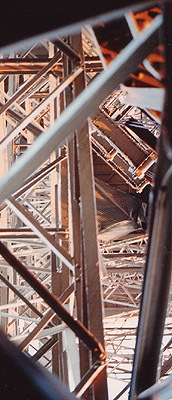

Les
métaux (supports)
|
Tous les métaux peuvent être oxydés et leurs oxydes
sont des composés alcalins, c'est dans la définition même du
métal.
Cependant, certains métaux s'oxydent beaucoup moins facilement que d'autres.
L'or et l'aluminium sont dans ce cas. Ils sont fort stables et se travaillent
facilement (découpe, déformation). L'aluminium a un avantage supplémentaire
évident : il est très bon
marché. Il est utilisé comme support par quelques peintres (remarque : l'or a
aussi été employé comme support). Bien qu'il soit très
stable, il est
indispensable de l'enduire (voir Enduction,
ci-dessous). Citons aussi le chrome, si peu oxydable dans des conditions
normales qu'il est utilisé dans la fabrication de l'acier... inoxydable.
Mais même les métaux oxydables peuvent être utilisés.
|
Sommaire
Recherche
de l'oxydation
Persistance
du plomb
Émaux
Enduction
des métaux pour la peinture - exemple de la Tour Eiffel
Peintures
capables d'adhérer directement sur les métaux |
Parmi eux, les métaux ferreux comptent parmi les plus
oxydables, mais ne doivent pas être systématiquement boudés (voir
ci-dessous Exemple de la Tour Eiffel).
D'autres, particulièrement ceux dont la base est le cuivre
(bronze, laiton, cuivre pur), ont été
traditionnellement utilisés tels quels comme supports pour la peinture
à l'huile, ce qui n'est pas conseillé car certains pigments sont des
oxydants. Enduire le support est toujours souhaitable.
Qu'ils soient en plaques, en feuilles ou sous d'autres
formes, il est important de noter que les métaux
ferreux ou non ferreux semblent s'accommoder assez bien dans l'ensemble des
enduits à base d'huiles à peindre. Cependant,
certains enduits contemporains semblent présenter des caractéristiques
protectrices peut-être un peu plus complètes et surtout plus adaptées aux
différentes catégories de métaux. C'est
souvent chez des fournisseurs de métaux ou de matériel BTP que peintres et
plasticiens trouveront ces produits.
Recherche
de l'oxydation
Les plasticiens peuvent préférer des métaux facilement oxydables et
provoquent parfois l'oxydation à l'instar des patineurs en sculpture. Il n'est
cependant pas facile de contrôler le processus, ce qui explique d'ailleurs que
les bons patineurs sont très recherchés.
Prenons un
exemple : le fer. Oxydée, sa surface devient pulvérulente et vire au jaune, au
rouge, au brun. Elle décline les chromatismes éternels des ocres, c'est à
dire des oxydes de fer ("terres de Mars").
Un premier problème se pose : comment interrompre le processus ou comment
prévoir l'évolution chromatique de l'oxydation ? Toute suite après, une seconde
difficulté apparaît : cette rouille n'est rien d'autre que du pigment brut,
alors comment la
"lier" ou la "fixer" sans en altérer non seulement
l'aspect, mais aussi la teinte (lire l'article Les
pigments, les couleurs) ?
C'est en fait impossible. Il faut recourir à des
solutions qui sembleront très imparfaites ou bien adopter une autre philosophie
en considérant dès le début que le résultat final
ne ressemblera pas à la seule oeuvre de la nature. Dans cette perspective, le
plasticien sait au commencement du travail que la rouille lui servira de
pigment.
Il y a aussi le point de vue selon lequel c'est l'éphémère qui est
recherché. Pas de vernis, pas de liant, pas de fixation de l'oxydation : la
nature continuera son oeuvre.
Persistance du plomb
L'alliage plomb + antimoine + étain
est
encore assez couramment utilisé pour réaliser certains travaux combinant
sculpture et peinture. Il est en effet malléable à basse température.
Cette
substance est dangereuse. Elle doit être
entièrement enduite le plus rapidement possible et les objets réalisés -
généralement de petite taille à cause du poids - doivent être tenus hors de
portée des enfants et des animaux.
Émaux
Les émaux sont des substances très particulières qui intéressent le domaine
des métaux en tant que supports : il s'agit de sortes de verres pouvant
parfaitement être appliqué sur support métallique. Ils sont l'objet d'un article
spécifique.

Enduction des métaux
pour la peinture - exemple de la Tour Eiffel
L'enduit polyuréthane et les primaires d'accrochage contemporains pour métaux en général,
autorisant toutes les peintures semblent supplanter progressivement le
minium, produit
dangereux interdit de vente aux détaillants mais pas aux grossistes.
Mentionnons la gomme
laque de Coromandel comme excellent enduit naturel, assez peu coûteux, pour
métaux ferreux ou non-ferreux.
>>> Produit encore plus banal, l'huile de lin
fortement diluée dans la térébenthine a fait ses
preuves. Elle a constitué un apprêt
valable pour le fer puddlé qui constitue... la Tour Eiffel ! La couche
suivante était plus grasse, garnie de siccatifs et de pigments minéraux dont
l'ocre jaune et certains éléments siliceux. Ces deux couches d'apprêt
particulièrement bien étudiées sont encore de nos jours, après un siècle
d'exposition à l'air libre, en très bon état.
Peintures capables
d'adhérer directement sur les métaux
On a cité dans l'introduction les peintures à l'huile directement appliquées
sur des métaux cuivrés, mais ce procédé traditionnel n'est pas un cas unique.
Certaines peintures destinées à la décoration intérieure et aux BTP sont
des sortes de patines métalliques (ors, argents, étains, etc.) à la chimie
complexe, autorisant aussi la peinture sur verre.
Des produits de type "loisirs créatifs", destinés théoriquement
à la peinture sur verre permettent également de travailler sur des métaux.
Certains doivent être cuits au four alimentaire.
Les petits pots de peinture pour les maquettes, distribués par les
marchands de jouets, adhèrent également à différents métaux.
Nous conseillons à nos visiteurs de
se reporter aux documentations des fabricants en cas de doute sur l'adhérence
d'un produit sur un métal spécifique.
Il est préférable de toute manière de ne pas appliquer directement une
peinture sur son support pour obtenir un résultat durable. L'enduction est une
opération pratiquement inévitable sauf si l'on recherche une oxydation.
Retour
début de page